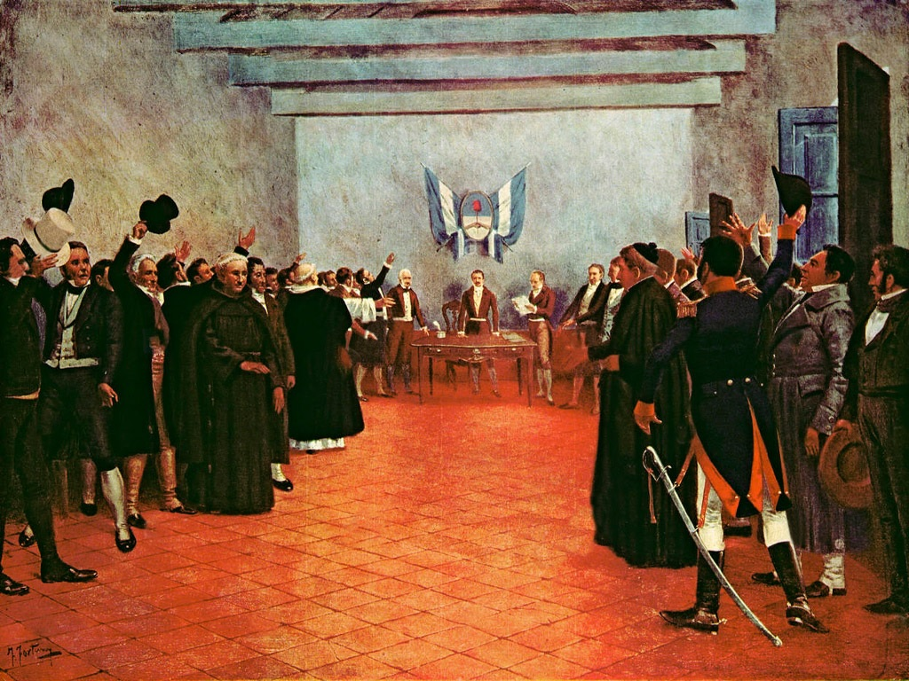
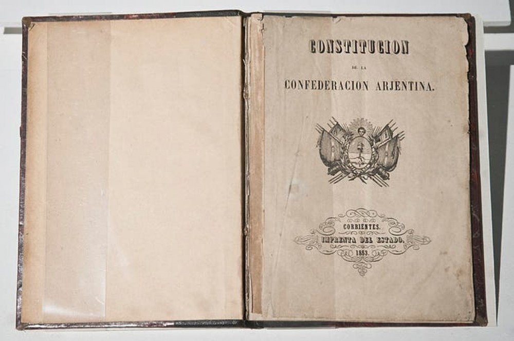

Historia Argentina
Fundación de Buenos Aires (1ra en 1536 y 2da en 1580)
Buenos Aires tuvo dos fundaciones porque la primera no logró consolidarse. En 1536, Pedro de Mendoza estableció un asentamiento en la zona, pero la expedición llegó agotada, sin recursos suficientes y con enfermedades. La relación con los pueblos originarios se volvió conflictiva debido a la escasez de alimentos y la actitud de los españoles, lo que derivó en ataques y finalmente en el abandono del lugar. Casi medio siglo después, en 1580, Juan de Garay llevó adelante la segunda fundación, esta vez con un plan más estable: repartió tierras, organizó un trazado urbano y promovió la llegada de pobladores. Esa segunda fundación es la que dio origen definitivo a la ciudad.

Virreinato del Río de la Plata (1776)
En 1776 la Corona española creó el Virreinato del Río de la Plata para mejorar la administración y defensa del sur de América. Buenos Aires pasó a ser capital y rápidamente ganó importancia económica y política. La autorización para comerciar directamente con España, y no solo a través de Lima, impulsó su puerto, favoreció el crecimiento urbano y convirtió a la ciudad en un centro clave para el intercambio de productos y para la circulación de ideas nuevas, muchas de las cuales cuestionaban el control colonial.

Invasiones Inglesas (1806–1807)
Inglaterra intentó invadir Buenos Aires dos veces, aprovechando la debilidad de España, que estaba en guerra con Napoleón. En ambas ocasiones, la población porteña organizó milicias propias y logró expulsar a los británicos sin ayuda de la metrópoli. Este hecho alimentó la sensación de autonomía: si los vecinos podían defender la ciudad solos, también podían gobernarla sin la autoridad española. Las invasiones inglesas, aunque fracasaron militarmente para Inglaterra, fueron decisivas para fortalecer la identidad local.

Revolución de Mayo (1810)
En mayo de 1810, al saberse que el rey de España estaba preso por Napoleón, los vecinos de Buenos Aires impulsaron un cambio político. Se desconoció la autoridad del virrey y se formó la Primera Junta. Aunque todavía no se declaró la independencia, la Revolución marcó el inicio de un proceso que rompió con el orden colonial, permitió la creación de gobiernos criollos y abrió una etapa de luchas, debates y organización política.

Declaración de la Independencia (1816)
Seis años después, en Tucumán, representantes de varias provincias declararon formalmente la independencia de las Provincias Unidas del Río de la Plata. Con ese acto, el territorio dejó de considerarse parte del imperio español y se propuso constituir un país soberano. Fue un paso fundamental para comenzar a definir un Estado propio, aunque la unificación del territorio llevaría aún varias décadas de conflictos internos.
Batalla de Caseros (1852)
La derrota de Juan Manuel de Rosas en Caseros marcó el fin de casi dos décadas de un gobierno centralizado y autoritario. El triunfo de Justo José de Urquiza abrió la puerta para reorganizar el país y dio inicio a las negociaciones que desembocaron en una nueva Constitución. También puso en debate el rol de Buenos Aires dentro del país, ya que la provincia tenía intereses económicos particulares ligados al comercio exterior.

Constitución Nacional (1853)
En 1853 se sancionó la Constitución que estableció la forma de gobierno republicana, federal y representativa. Definió la división de poderes, los derechos de las personas y el modo en que se organizaría el Estado. Buenos Aires, en desacuerdo con algunos puntos, no se incorporó al nuevo sistema hasta 1862, cuando finalmente se integró tras conflictos políticos y militares. Con su incorporación, se consolidó la estructura del país tal como la conocemos hoy.
Ley Sáenz Peña (1912)
Esta ley transformó definitivamente la política argentina al establecer el voto secreto, universal y obligatorio para todos los varones. Terminó con el fraude electoral sistemático y permitió elecciones más libres. Gracias a esto, en 1916 llegó a la presidencia Hipólito Yrigoyen, el primer mandatario elegido por una mayoría popular real, iniciando una nueva etapa en la vida democrática del país.

Dictadura Militar (1976–1983)
El golpe de Estado de 1976 instauró una dictadura que aplicó un plan de represión sistemática: censura, persecuciones, secuestros, torturas y desaparición de miles de personas. También impuso un modelo económico que produjo desindustrialización y endeudamiento. Fue un período profundamente traumático para la sociedad argentina y es recordado como uno de los más oscuros de su historia.

Guerra de Malvinas (1982)
En 1982, la dictadura decidió ocupar militarmente las Islas Malvinas, lo que provocó un conflicto armado con el Reino Unido. La guerra terminó con la derrota argentina y la muerte de cientos de soldados, muchos de ellos jóvenes enviados sin preparación adecuada. El fracaso militar debilitó totalmente a la dictadura y aceleró el retorno a la democracia.
Crisis del 2001
En 2001 el país atravesó una crisis económica, política y social profunda: congelamiento de depósitos (corralito), cierre de fábricas, desempleo masivo y pobreza creciente. Las protestas y movilizaciones llevaron a la renuncia del presidente De la Rúa y en pocos días asumieron varios presidentes temporales. Fue uno de los momentos más críticos desde el retorno democrático y dejó consecuencias duraderas.

Siglo XXI (2003–actualidad)
Desde 2003 en adelante, distintos gobiernos —Kirchner, Macri, Fernández y Milei— enfrentaron problemas económicos persistentes como inflación, deuda y recesiones cíclicas, junto con períodos de crecimiento y avances sociales en temas de derechos humanos, inclusión y políticas públicas. Es una etapa marcada por fuertes cambios políticos, tensiones, polarización e inestabilidad, donde la sociedad continúa debatiendo el rumbo económico y el modelo de país.

Hacé clic en un evento
Acá aparecerá la descripción y la imagen del hecho histórico.